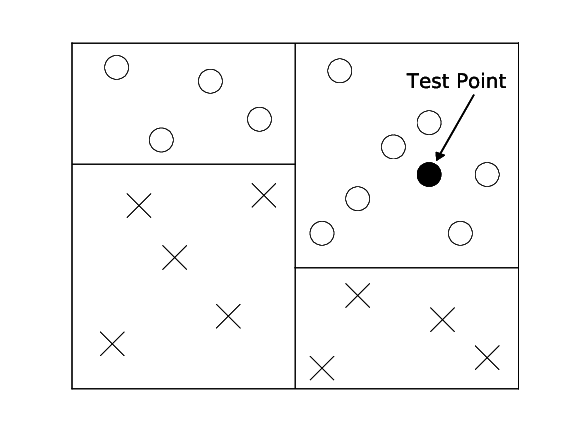
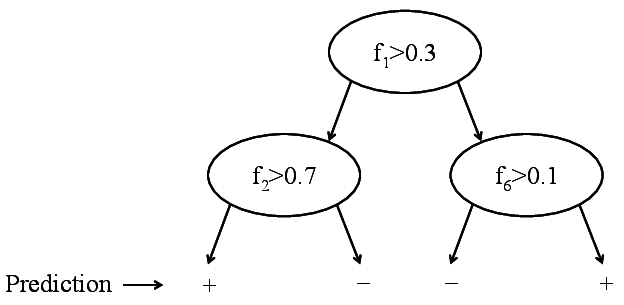
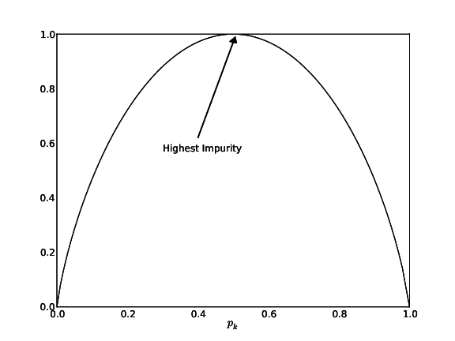
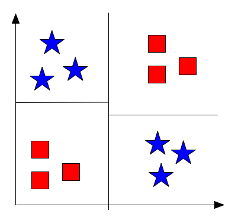
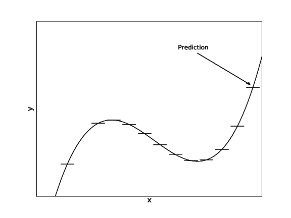
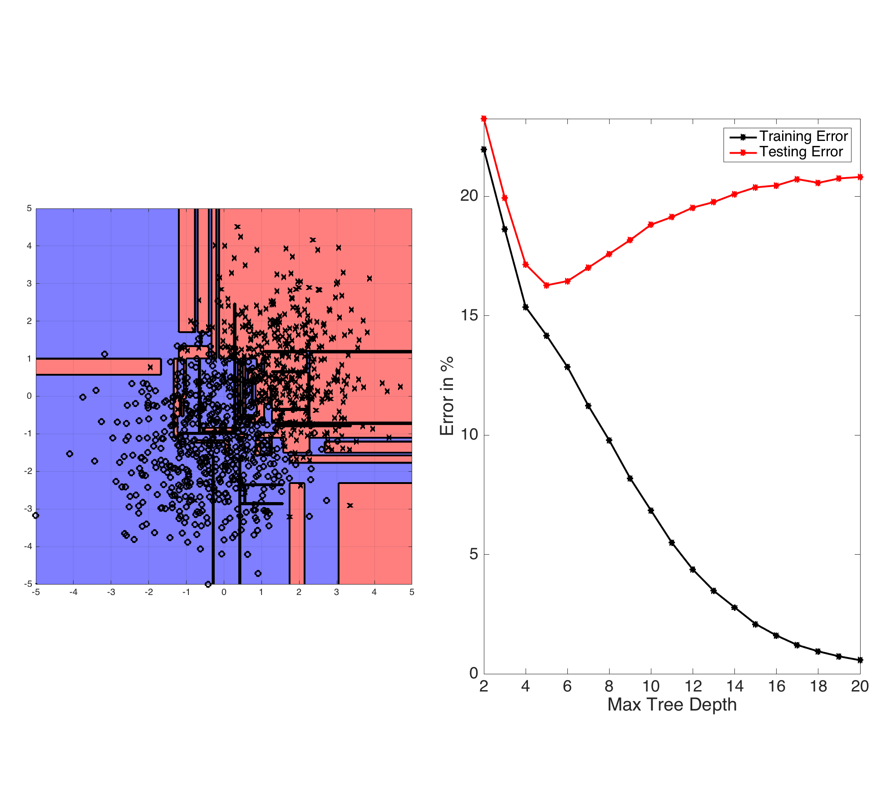

  Binary decision tree. Only labels are stored.
Gini impurity of a tree: \[G^T(S)=\frac{\left | S_L \right |}{\left | S \right |}G^T(S_L)+\frac{\left | S_R \right |}{\left | S \right |}G^T(S_R)\] where: Fig: Gini Impurity Function
 Fig 4: Example XOR
 Fig: CART
 Fig: ID3-trees are prone to overfitting as the tree depth increases. The left plot shows the learned decision boundary of a binary data set drawn from two Gaussian distributions. The right plot shows the testing and training errors with increasing tree depth.